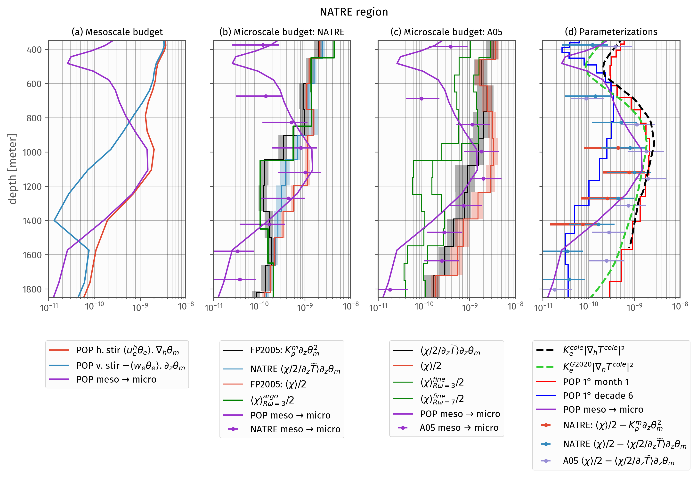
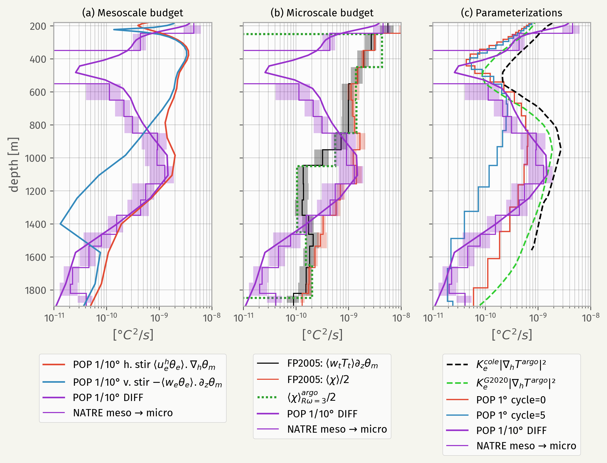
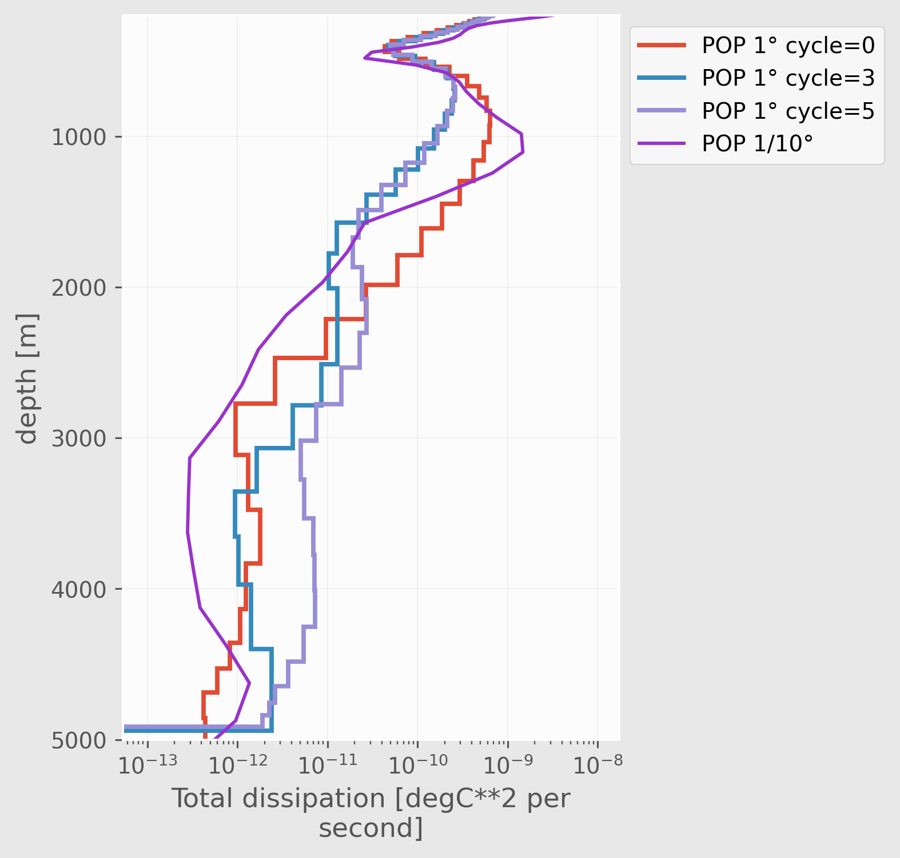
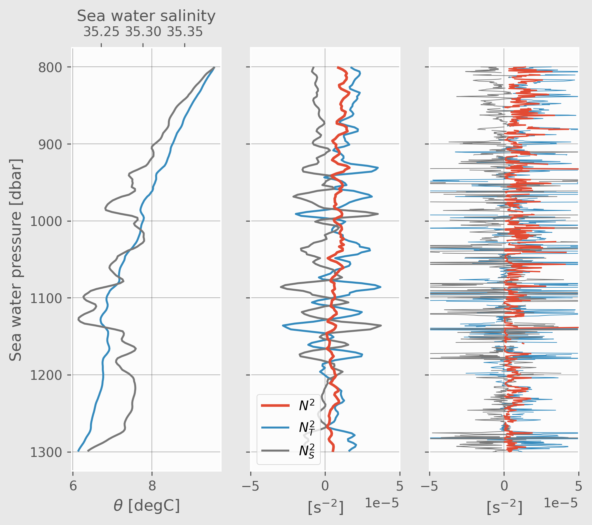

2022-06 GRC
Contents
%matplotlib inline
import matplotlib.pyplot as plt
import eddydiff as ed
import xarray as xr
plt.rcParams["figure.dpi"] = 140
plt.rcParams["figure.facecolor"] = "none" # "F5F5EE"
plt.rcParams["axes.facecolor"] = (0.99,) * 3
plt.rcParams["grid.color"] = (0.25,) * 3
plt.rcParams["grid.alpha"] = 0.3
plt.rcParams["font.sans-serif"] = "Fira Sans"
plt.rcParams["font.size"] = 12
plt.rcParams["axes.edgecolor"] = "darkgray"
argo_fine_depth["pressure"] = ("pressure_bins", np.arange(350, 1950, 200))
argo_fine_depth = argo_fine_depth.swap_dims({"pressure_bins": "pressure"})
argo_fine_depth["pressure_bins"] = ed.intervals_to_bounds(
argo_fine_depth.pressure_bins
).rename({"gamma_n": "pressure"})
argo_fine_depth["pressure"].attrs["bounds"] = "pressure_bins"
a05_finescale = (
xr.open_dataset(ed.sections.get_filenames("A05_2015")["finescale"])
.sel(station=a05_binned.station.data)
.mean("station")
)
a05_finescale = a05_finescale.cf.add_bounds("Z")
a05_finescale
<xarray.Dataset>
Dimensions: (pressure: 65, criteria: 4, bounds: 2)
Coordinates:
* pressure (pressure) float64 200.0 300.0 ... 6.499e+03 6.549e+03
* criteria (criteria) object 'mixsea' 'kunze' 'whalen' 'whalen_7'
profile_type object 'C'
geometry_container float64 nan
expocode object '74EQ20151206'
cast int8 1
section_id object 'A05'
pressure_bounds (bounds, pressure) float64 150.0 250.0 ... 6.574e+03
Dimensions without coordinates: bounds
Data variables: (12/14)
ε (pressure, criteria) float64 3.416e-10 4.708e-08 ... nan
Kρ (pressure, criteria) float64 2.595e-06 0.000324 ... nan
ξvar (pressure, criteria) float64 0.2131 0.06505 ... nan nan
ξvargm (pressure, criteria) float64 0.2975 0.04085 ... 0.1788
Tzlin (pressure) float64 0.01906 0.01918 0.01637 ... nan nan
Tzmean (pressure) float64 0.02098 0.01917 0.01643 ... 0.0 0.0
... ...
Tmode float64 80.3
σmode float64 77.87
Tmld float64 72.65
σmld float64 48.22
χ (pressure, criteria) float64 2.219e-09 3.122e-07 ... nan
KtTz (pressure, criteria) float64 5.29e-08 7.001e-06 ... nan2022-06 GRC#
∇S#
cole = ed.read_cole()
cole.salinity_gradient.attrs["long_name"] = "$|∇_ρS|$"
import matplotlib as mpl
(
cole.salinity_gradient.sel(lon=slice(360 - 50, 342))
.sel(lat=24.7, method="nearest")
.cf.plot(robust=True, cmap=mpl.cm.magma, size=2, aspect=3)
)
plt.title("")
Text(0.5, 1.0, '')
Variance budget#
micro.pres.attrs["bounds"] = "pres_err"
def get_edges(pop):
ybounds = pop.z_σ_bounds
bdim = pop.cf.get_bounds_dim_name("z_σ")
yedges = np.append(ybounds.isel({bdim: 0}).data, ybounds.data[-1, -1])
return yedges
mesomicrocolor = "darkorchid"
finescalecolor = "green"
hirescolor = mesomicrocolor
spinupcolor = "r"
spinupendcolor = "b"
lastcyclecolor = "deepskyblue"
error_kwargs = dict(error="x", ls="none", marker=".")
def plot_pop_natre_meso_micro(ax):
(-1 * pop_natre.DISS).cf.plot(
ax=ax, lw=1.5, color=mesomicrocolor, label="POP meso $→$ micro"
)
# dcpy.plots.fill_between_bounds(
# micro,
# "residual",
# y="pres",
# color=mesomicrocolor,
# label="NATRE meso $→$ micro",
# ax=ax,
# )
f, ax = plt.subplots(1, 4, sharey=False, sharex=True, constrained_layout=False)
### Mesoscale budget
pop_natre.BC.cf.plot(ax=ax[0], label="POP h. stir $⟨u_e^h θ_e⟩.∇_hθ_m$")
np.abs(-1 * pop_natre.PKC).cf.plot(ax=ax[0], label="POP v. stir $-⟨w_eθ_e⟩.∂_zθ_m$")
# (-1 * pop_natre.VMIX).cf.plot(color="sienna", ax=ax[0], label="POP VMIX")
# (-1 * pop_natre.HDIFF).cf.plot(ax=ax[0], label="POP HDIFF", marker="x", ls="none")
#################################
######## Microscale budget: NATRE
#################################
plt.sca(ax[1])
dcpy.plots.fill_between_bounds(
micro,
"KρTz2",
y="pres",
color="k",
label="FP2005: $K_ρ^m ∂_zθ_m^2$",
ax=ax[1],
)
dcpy.plots.fill_between_bounds(
micro,
"KtTz~Tz",
y="pres",
color="C1",
label=r"NATRE $⟨χ/2/∂_z\widetilde{T}⟩ ∂_zθ_m$",
ax=ax[1],
)
dcpy.plots.fill_between_bounds(
micro,
"chib2",
y="pres",
color="C0",
label="FP2005: $⟨χ⟩/2$",
ax=ax[1],
)
dcpy.plots.errorbar(
micro,
x="residual",
y="pres",
color=mesomicrocolor,
label="NATRE meso $→$ micro",
ax=ax[1],
**error_kwargs,
)
(argo_fine_depth.χ.sel(criteria="whalen") / 2).cf.plot.step(
# marker="o",
color=finescalecolor,
ax=ax[1],
y="pressure_bins",
label="$⟨χ⟩^{argo}_{Rω=3}/2$",
)
#################################
########## Microscale budget: A05
#################################
dcpy.plots.fill_between_bounds(
a05_binned,
"KtTz~Tz",
y="pres",
color="k",
label=r"$⟨χ/2/∂_z\widetilde{T}⟩ ∂_zθ_m$",
ax=ax[2],
)
dcpy.plots.fill_between_bounds(
a05_binned,
"chib2",
y="pres",
color="C0",
label="$⟨χ⟩/2$",
ax=ax[2],
)
dcpy.plots.errorbar(
a05_binned,
x="residual_chi",
y="pres",
color=mesomicrocolor,
label="A05 meso → micro",
ax=ax[2],
**error_kwargs,
)
dcpy.plots.fill_between_bounds(
a05_finescale.sel(criteria="whalen") / 2,
"χ",
fill=False,
y="pressure",
color=finescalecolor,
label="$⟨χ⟩^{fine}_{Rω=3}/2$",
ax=ax[2],
)
dcpy.plots.fill_between_bounds(
a05_finescale.sel(criteria="whalen_7") / 2,
"χ",
fill=False,
y="pressure",
color=finescalecolor,
label="$⟨χ⟩^{fine}_{Rω=7}/2$",
ax=ax[2],
)
#################################
### Parameterizations
#################################
dcpy.plots.errorbar(
micro,
x="residual_chi",
y="pres",
# color=mesomicrocolor,
label="NATRE: $⟨χ⟩/2 - K_ρ^m ∂_zθ_m^2$",
lw=2.5,
ax=ax[3],
**error_kwargs,
)
dcpy.plots.errorbar(
micro,
x="residual",
y="pres",
# color=mesomicrocolor,
label=r"NATRE $⟨χ⟩/2 - ⟨χ/2/∂_z\widetilde{T}⟩ ∂_zθ_m$",
ax=ax[3],
**error_kwargs,
)
dcpy.plots.errorbar(
a05_binned,
x="residual_chi",
y="pres",
# color=mesomicrocolor,
label=r"A05 $⟨χ⟩/2 - ⟨χ/2/∂_z\widetilde{T}⟩ ∂_zθ_m$",
ax=ax[3],
**error_kwargs,
)
# groeskamp.eddy_var_0.plot(
# y="pres",
# label="$K_e^{G2020unsupp} |∇_hT^{cole}|²$",
# color="limegreen",
# ls="-.",
# ax=ax[2],
# )
cole_natre.RediVar.plot(
y="pres", label="$K_e^{cole} |∇_hT^{cole}|²$", color="k", ls="--", ax=ax[3], lw=2
)
groeskamp.eddy_var.plot(
y="pres",
label="$K_e^{G2020} |∇_hT^{cole}|²$",
color="limegreen",
ls="--",
ax=ax[3],
lw=2,
)
#################
### POP 1°
#################
for pop_, color, label in zip(
[
year1_profile.squeeze(),
pop_1deg_spinup_profile.isel(decade=5),
# pop_1deg_natre_profile.sel(cycle=5),
],
[spinupcolor, spinupendcolor],
["POP 1° month 1", "POP 1° decade 6"],
):
kwargs = dict(edges=get_edges(pop_), orientation="horizontal", lw=1.25, color=color)
# ax["delT2"].stairs(np.sqrt(pop_.delT2_plane.data), **kwargs)
if "KAPPA_ISOP" in pop_:
# ax["K"].stairs(pop_.KAPPA_ISOP.to_numpy(), **kwargs)
ax[3].stairs(pop_.RediVar.to_numpy(), **kwargs, label=label)
#################################
### Cleanup
#################################
for axx in ax:
plot_pop_natre_meso_micro(axx)
axx.set_xscale("log")
axx.set_xlabel("")
axx.set_ylim([1850, 350])
axx.set_xlim([1e-11, 1e-8])
# axx.set_xticks([1e-11, 1e-10, 1e-9, 1e-8])
axx.xaxis.set_minor_locator(
mpl.ticker.LogLocator(base=10, subs="all", numticks=120)
)
# axx.set_ylim([1900, 180])
axx.legend(loc="upper center", bbox_to_anchor=(0.5, -0.15))
axx.grid(True, which="both", lw=0.5)
# ax[1].set_xlabel("Variance production or dissipation [°C²/s]")
f.suptitle("NATRE region")
ax[0].set_title("(a) Mesoscale budget", fontsize="medium")
ax[1].set_title("(b) Microscale budget: NATRE", fontsize="medium")
ax[2].set_title("(c) Microscale budget: A05", fontsize="medium")
ax[3].set_title("(d) Parameterizations", fontsize="medium")
dcpy.plots.clean_axes(ax)
f.set_size_inches((12, 5))
# f.savefig("../images/natre-meso-micro-param.png", bbox_inches="tight")

2022-02 Ocean Sciences#
micro.pres.attrs["bounds"] = "pres_err"
def plot_pop_natre_meso_micro(ax):
mesomicrocolor = "darkorchid"
(-1 * pop_natre.DISS).cf.plot(
ax=ax, lw=1.5, color=mesomicrocolor, label="POP 1/10° DIFF"
)
dcpy.plots.fill_between_bounds(
micro,
"residual",
y="pres",
color=mesomicrocolor,
label="NATRE meso $→$ micro",
ax=ax,
)
f, ax = plt.subplots(1, 3, sharey=True, sharex=True, constrained_layout=False)
### Mesoscale budget
pop_natre.BC.cf.plot(ax=ax[0], label="POP 1/10° h. stir $⟨u_e^h θ_e⟩.∇_hθ_m$")
(np.abs(pop_natre.PKC)).cf.plot(ax=ax[0], label="POP 1/10° v. stir $-⟨w_eθ_e⟩.∂_zθ_m$")
# (-1 * pop_natre.VMIX).cf.plot(color="sienna", ax=ax[0], label="POP VMIX")
# (-1 * pop_natre.HDIFF).cf.plot(ax=ax[0], label="POP HDIFF", marker="x", ls="none")
### Microscale budget
plt.sca(ax[1])
dcpy.plots.fill_between_bounds(
micro,
"KρTz2",
y="pres",
color="k",
label="FP2005: $⟨w_t T_t⟩ ∂_zθ_m$",
# stairs_kwargs=dict(lw=1.5),
)
dcpy.plots.fill_between_bounds(
micro,
"chib2",
y="pres",
color="C0",
label="FP2005: $⟨χ⟩/2$",
# stairs_kwargs=dict(lw=1.5),
)
dcpy.plots.fill_between_bounds(
(argo_fine_depth.sel(criteria="whalen") / 2),
"χ",
stairs_kwargs=dict(lw=2, ls=(0, (1, 1))),
color="tab:green",
fill=False,
ax=plt.gca(),
y="pressure",
label="$⟨χ⟩^{argo}_{Rω=3}/2$",
)
### Parameterizations
cole_var.plot(
y="pres", label="$K_e^{cole} |∇_hT^{argo}|²$", color="k", ls="--", ax=ax[2]
)
# groeskamp.eddy_var_0.plot(
# y="pres",
# label="$K_e^{G2020unsupp} |∇_hT^{cole}|²$",
# color="limegreen",
# ls="-.",
# ax=ax[2],
# )
groeskamp.eddy_var.plot(
y="pres", label="$K_e^{G2020} |∇_hT^{argo}|²$", color="limegreen", ls="--", ax=ax[2]
)
for cycle in [0, 5]:
pop = pop_1deg_natre.isel(cycle=cycle)
pop = pop.where(pop.z_t.notnull(), drop=True)
pop = pop.cf.add_bounds("z_t")
ybounds = pop.z_t_bounds
bdim = pop.cf.get_bounds_dim_name("z_t")
yedges = np.append(ybounds.isel({bdim: 0}).data, ybounds[-1, -1])
ax[2].stairs(
pop.RediVar,
edges=yedges,
orientation="horizontal",
lw=1.2,
label=f"POP 1° cycle={cycle}",
)
### Cleanup
for idx, axx in enumerate(ax):
plot_pop_natre_meso_micro(axx)
axx.set_xscale("log")
axx.set_xlabel("")
axx.legend(loc="upper center", bbox_to_anchor=(0.5, -0.15))
axx.grid(True, which="both", lw=0.5)
axx.set_xlabel("[$°C^2/s$]")
# ax[1].set_xlabel("Variance production or dissipation [°C²/s]")
# f.suptitle("NATRE")
ax[0].set_title("(a) Mesoscale budget", fontsize="medium")
ax[1].set_title("(b) Microscale budget", fontsize="medium")
ax[2].set_title("(c) Parameterizations", fontsize="medium")
ax[0].set_xlim([1e-11, 1e-8])
ax[0].set_ylim([1900, 180])
dcpy.plots.clean_axes(ax)
f.set_size_inches((9.2, 5))
# f.savefig("../images/natre-meso-micro-param.png")

f, ax = plt.subplots(1, 1)
for cycle in [0, 3, 5]:
pop = pop_1deg_natre.isel(cycle=cycle)
pop = pop.where(pop.z_t.notnull(), drop=True)
pop = pop.cf.add_bounds("z_t")
ybounds = pop.z_t_bounds
bdim = pop.cf.get_bounds_dim_name("z_t")
yedges = np.append(ybounds.isel({bdim: 0}).data, ybounds[-1, -1])
ax.stairs(
pop.RediVar,
edges=yedges,
orientation="horizontal",
lw=2,
label=f"POP 1° cycle={cycle}",
)
ax.set_ylim((5000, 200))
mesomicrocolor = "darkorchid"
(-1 * pop_natre.DISS).cf.plot(ax=ax, lw=1.5, color=mesomicrocolor, label="POP 1/10°")
ax.set_xscale("log")
ax.legend(bbox_to_anchor=(1, 1))
f.set_size_inches((4, 6))

profile = natre.isel(latitude=3, longitude=6)
profile["NT2"] = (
-9.81
* dcpy.eos.alpha(profile.salt, profile.temp, profile.pres)
* profile.theta.interpolate_na("pres").differentiate("pres")
)
profile["NS2"] = (
9.81
* dcpy.eos.beta(profile.salt, profile.temp, profile.pres)
* profile.salt.interpolate_na("pres").differentiate("pres")
)
smoothed = (
profile.rolling(pres=21, center=True, min_periods=1)
.mean()
.coarsen(pres=5, boundary="trim")
.mean()
.sel(pres=slice(800, 1300))
)
smoothed["NT2"] = (
-9.81
* dcpy.eos.alpha(smoothed.salt, smoothed.temp, smoothed.pres)
* smoothed.theta.interpolate_na("pres").differentiate("pres")
)
smoothed["NS2"] = (
9.81
* dcpy.eos.beta(smoothed.salt, smoothed.temp, smoothed.pres)
* smoothed.salt.interpolate_na("pres").differentiate("pres")
)
f, ax = plt.subplots(1, 3, sharey=True)
smoothed.theta.cf.plot(ax=ax[0], color="C1")
axS = ax[0].twiny()
axS.grid(False)
smoothed.salt.cf.plot(color="C3", ax=axS)
# ax2 = ax[0].twiny()
# smoothed.gamma_n.cf.plot(color="k", ax=ax2)
# ax2.grid(False)
smoothed.N2.cf.plot(lw=2, zorder=5, ax=ax[1])
smoothed.NT2.cf.plot(ax=ax[1])
smoothed.NS2.cf.plot(color="C3", ax=ax[1])
ax[1].set_xlim([-5e-5, 5e-5])
ax[1].legend(["$N^2$", "$N_T^2$", "$N_S^2$"])
profile.N2.sel(pres=slice(800, 1300)).cf.plot(lw=1, zorder=5, ax=ax[2])
profile.NT2.sel(pres=slice(800, 1300)).cf.plot(ax=ax[2], lw=0.5)
profile.NS2.sel(pres=slice(800, 1300)).cf.plot(color="C3", ax=ax[2], lw=0.5)
ax[2].set_xlim([-5e-5, 5e-5])
# ax[2].legend(["$N^2$", "$N_T^2$", "$N_S^2$"])
dcpy.plots.clean_axes(ax)
[aa.set_title("") for aa in ax]
axS.set_title("")
ax[1].set_xlabel("[s$^{-2}$]")
f.set_size_inches((7, 6))

Nice matplotlib map#
import cartopy.crs as ccrs
natre = ed.natre.read_natre()
lats, lons = np.meshgrid(natre.latitude, natre.longitude)
a05 = xr.load_dataset("../datasets/a05-section.nc").query({"cast": "longitude > -35"})
with_chi = a05[["latitude", "longitude"]].where(
a05.chi.count("pressure") > 0, drop=True
)
plt.rcParams["axes.facecolor"] = "none"
f, ax = plt.subplots(1, 1, subplot_kw=dict(projection=ccrs.PlateCarree()))
topo.plot(
transform=ccrs.PlateCarree(),
add_colorbar=False,
vmin=-5000,
vmax=5000,
cmap="RdBu_r",
center=0,
)
topo.plot.contour(transform=ccrs.PlateCarree(), levels=[0], colors="k")
(h1,) = ax.plot(
lons.ravel(),
lats.ravel(),
color="w",
marker="o",
ls="none",
ms=2,
transform=ccrs.PlateCarree(),
)
(h0,) = ax.plot(
a05.longitude, a05.latitude, marker=".", lw=0.5, transform=ccrs.PlateCarree()
)
(h1,) = ax.plot(
with_chi.longitude,
with_chi.latitude,
color="k",
ls="none",
ms=4,
marker=".",
transform=ccrs.PlateCarree(),
)
for cast in with_chi.cast.data:
subset = with_chi.sel(cast=cast)
ax.text(
subset.longitude,
subset.latitude - 0.75,
str(cast),
rotation=45,
fontsize=5,
color="w",
va="top",
ha="right",
)
f.savefig("../images/A05-NATRE-domain.png")
# ax.legend([h0, h1], ["GO-SHIP A05", "NATRE"])
---------------------------------------------------------------------------
KeyError Traceback (most recent call last)
File ~/work/python/xarray/xarray/core/dataset.py:1403, in Dataset._construct_dataarray(self, name)
1402 try:
-> 1403 variable = self._variables[name]
1404 except KeyError:
KeyError: 'sea_water_salinity'
During handling of the above exception, another exception occurred:
KeyError Traceback (most recent call last)
File ~/work/python/cf-xarray/cf_xarray/accessor.py:689, in _getitem(accessor, key, skip)
688 for name in allnames:
--> 689 extravars = accessor.get_associated_variable_names(
690 name, skip_bounds=scalar_key, error=False
691 )
692 coords.extend(itertools.chain(*extravars.values()))
File ~/work/python/cf-xarray/cf_xarray/accessor.py:1486, in CFAccessor.get_associated_variable_names(self, name, skip_bounds, error)
1485 coords: dict[str, list[str]] = {k: [] for k in keys}
-> 1486 attrs_or_encoding = ChainMap(self._obj[name].attrs, self._obj[name].encoding)
1488 if "coordinates" in attrs_or_encoding:
File ~/work/python/xarray/xarray/core/dataset.py:1507, in Dataset.__getitem__(self, key)
1506 if hashable(key):
-> 1507 return self._construct_dataarray(key)
1508 else:
File ~/work/python/xarray/xarray/core/dataset.py:1405, in Dataset._construct_dataarray(self, name)
1404 except KeyError:
-> 1405 _, name, variable = _get_virtual_variable(
1406 self._variables, name, self._level_coords, self.dims
1407 )
1409 needed_dims = set(variable.dims)
File ~/work/python/xarray/xarray/core/dataset.py:178, in _get_virtual_variable(variables, key, level_vars, dim_sizes)
177 else:
--> 178 ref_var = variables[ref_name]
180 if var_name is None:
KeyError: 'sea_water_salinity'
During handling of the above exception, another exception occurred:
KeyError Traceback (most recent call last)
Input In [15], in <module>
1 import cartopy.crs as ccrs
----> 3 natre = ed.natre.read_natre()
4 lats, lons = np.meshgrid(natre.latitude, natre.longitude)
6 a05 = xr.load_dataset("../datasets/a05-section.nc").query({"cast": "longitude > -35"})
File ~/work/eddydiff/eddydiff/natre.py:120, in read_natre()
115 natre["gamma_n"] = dcpy.oceans.neutral_density(natre)
116 natre = dcpy.oceans.thorpesort(
117 natre, natre.gamma_n.drop("depth").interpolate_na("pres"), core_dim="pres"
118 )
--> 120 natre = sections.add_ancillary_variables(natre, pref=1000)
121 natre = natre.where(natre.chi > 1e-14)
123 # messes up cf-xarray
File ~/work/eddydiff/eddydiff/sections.py:119, in add_ancillary_variables(ds, pref)
115 def add_ancillary_variables(ds, pref=0):
116 """Adds ancillary variables."""
118 salt, temp, pres = (
--> 119 ds.cf["sea_water_salinity"],
120 ds.cf["sea_water_temperature"],
121 ds.cf["sea_water_pressure"],
122 )
124 if "theta" not in ds:
125 ds["theta"] = dcpy.eos.ptmp(
126 salt,
127 temp,
128 pres,
129 pr=pref,
130 )
File ~/work/python/cf-xarray/cf_xarray/accessor.py:1911, in CFDatasetAccessor.__getitem__(self, key)
1881 def __getitem__(self, key: str | list[str]) -> DataArray | Dataset:
1882 """
1883 Index into a Dataset making use of CF attributes.
1884
(...)
1909 Add additional keys by specifying "custom criteria". See :ref:`custom_criteria` for more.
1910 """
-> 1911 return _getitem(self, key)
File ~/work/python/cf-xarray/cf_xarray/accessor.py:732, in _getitem(accessor, key, skip)
729 return ds.set_coords(coords)
731 except KeyError:
--> 732 raise KeyError(
733 f"{kind}.cf does not understand the key {k!r}. "
734 f"Use 'repr({kind}.cf)' (or '{kind}.cf' in a Jupyter environment) to see a list of key names that can be interpreted."
735 )
KeyError: "Dataset.cf does not understand the key 'sea_water_salinity'. Use 'repr(Dataset.cf)' (or 'Dataset.cf' in a Jupyter environment) to see a list of key names that can be interpreted."
plt.rcParams["figure.dpi"] = 140
plt.rcParams["figure.facecolor"] = "none" # (0.91, 0.91, 0.91)
plt.rcParams["axes.facecolor"] = (0.99,) * 3
plt.rcParams.update(
{
"axes.spines.top": True,
"axes.spines.bottom": True,
"axes.spines.left": True,
"axes.spines.right": True,
"axes.edgecolor": (0.31,) * 3,
"axes.grid.which": "both",
"grid.linewidth": 0.5,
"grid.alpha": 0.3,
"grid.color": (0,) * 3,
}
)
hirescolor = "darkorchid"
spinupcolor = "r"
spinupendcolor = "b"
lastcyclecolor = "deepskyblue"
f, axx = plt.subplots(1, 3, sharey=True, constrained_layout=True)
ax = dict(zip(["K", "delT2", "chi"], axx))
for pop_, color, label in zip(
[
pop_hires_clim_profile,
year1_profile.squeeze(),
pop_1deg_spinup_profile.isel(decade=5),
pop_1deg_natre_profile.sel(cycle=5),
],
[hirescolor, spinupcolor, spinupendcolor, lastcyclecolor],
["POP 1/10°", "POP 1° month 1", "POP 1° decade 6", "POP 1° last cycle"],
):
kwargs = dict(edges=get_edges(pop_), orientation="horizontal", lw=2, color=color)
ax["delT2"].stairs(np.sqrt(pop_.delT2_plane.data), **kwargs)
if "KAPPA_ISOP" in pop_:
ax["K"].stairs(pop_.KAPPA_ISOP.to_numpy(), **kwargs)
ax["chi"].stairs(pop_.RediVar.to_numpy(), **kwargs, label=label)
# K
groeskamp.Ke.cf.plot.step(
y="pres", ax=ax["K"], color="limegreen", ls="--", label="Groeskamp (2020)"
)
cole_natre.diffusivity.cf.plot.step(
y="pres", ax=ax["K"], color="k", ls="--", label="Cole (2015)"
)
pop_hires_clim_profile.Ke.drop_vars("z_σ").cf.plot.step(
y="depth",
ax=ax["K"],
xlim=[0, 3000],
color=hirescolor,
label="POP 1/10° χ$^{meso}$/|∇T|$^2$",
)
# ∇T2
for data, color, label in zip(
[argo_delT2_plane, mimoc_natre_profile.delT2_plane.rename({"pressure": "pres"})],
["k", "darkcyan"],
["Argo", "MIMOC"],
):
np.sqrt(data).cf.plot(
y="pres", ax=ax["delT2"], color=color, label=label, _labels=False
)
# χmeso
(-1 * pop_natre.DISS).cf.plot(
ax=ax["chi"], lw=2, color=hirescolor, label="POP 1/10°", _labels=False
)
ax["K"].set_xlabel("$K^{redi}$ [m$^2$/s]")
ax["chi"].set_xlabel("$χ^{meso}$ [C$^2$/s]")
ax["delT2"].set_xlabel("$|∇T|^ρ$ [C/m]")
ax["chi"].set_xscale("log")
# ax["delT2"].set_xscale("log")
axx[0].set_title("")
axx[0].set_ylim([3000, 0])
axx[0].set_xlim([0, 2000])
axx[1].set_xlim([1e-8, 5e-6])
axx[-1].set_xlim([1e-12, 5e-9])
dcpy.plots.clean_axes(axx)
for a in axx:
a.legend(loc="upper center", bbox_to_anchor=(0.5, -0.15))
f.set_size_inches((8, 6))
Font 'default' does not have a glyph for '\u2207' [U+2207], substituting with a dummy symbol.
Font 'default' does not have a glyph for '\u2207' [U+2207], substituting with a dummy symbol.
Font 'default' does not have a glyph for '\u2207' [U+2207], substituting with a dummy symbol.